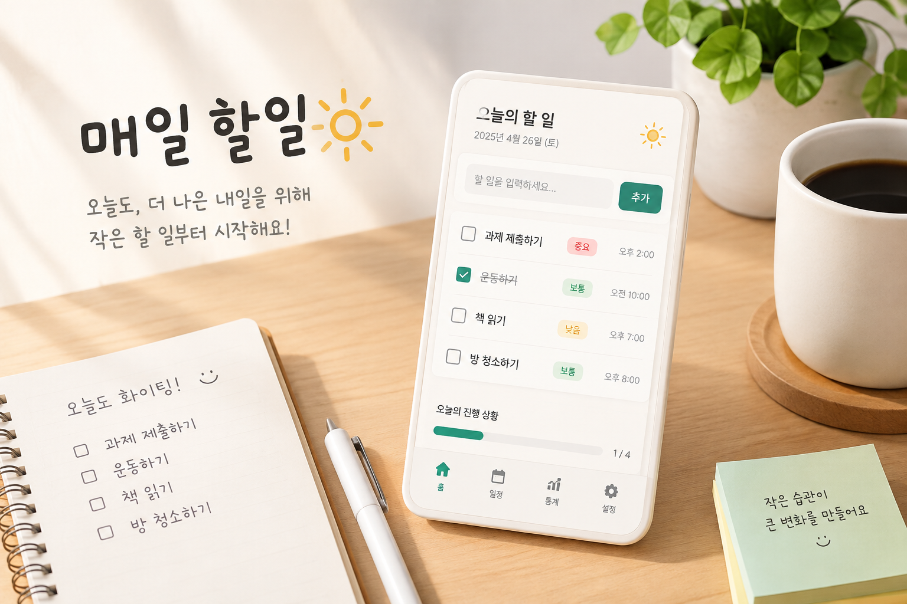

서비스소개
매일 할일을 까먹지않게되는 기록장

매일 할일을 기록해 체계적인 하루를 제공합니다
주요 기능
할일 추가 기능
내 매일 할일을 추가할수있습니다
할일 완료 기능
내가 적어놓은 할일을 완료한것을 기록할수있습니다
마감시한 설정 기능
내 매일 할일에 마감시한을 설정할수있습니다
이용 방법
- 할일을 입력창에 입력합니다
- 등록한 할일을 확인 그리고 마감시한을설정해 우선순위를 정합니다
- 완료한 일은 체크하면서 진행상황을 확인합니다
할일 관리 설정
사용자 이름 입력
0 / 10
Daily 이용 동의
동의 후 Daily를 시작할수있습니다.
할일 목록
이 날짜에 등록된 기록이 없습니다.
Daily 설정
1 . 정보 2 . 설정 3 . 확인
오늘의 할일을 입력해주세요.
마감 시한을 설정해주세요.
입력한 내용을 확인해주세요.
할일 내용
마감 날짜마감 날짜 없음
할 일 설정이 완료되었습니다.
설정한 내용을 확인했습니다. 필요하면 다시 설정할수 있습니다.
할일 소식 받기
이메일을 입력한 뒤 신청해주세요.